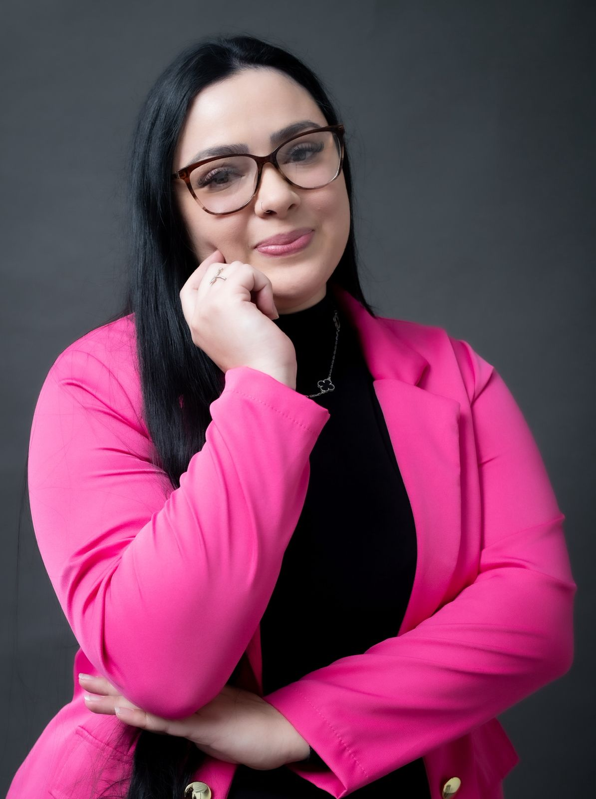

Andressa Mazur Advocacia
OAB/SP 527.566
Atuação estratégica, humana e responsável na defesa dos seus direitos
OAB/SP 527.566
Atuação estratégica, humana e responsável na defesa dos seus direitos
A Andressa Mazur Advocacia é um escritório jurídico especializado em Direito de Família, com atendimento humanizado e acolhedor, voltado especialmente para mulheres e mães solo que buscam amparo legal com respeito, escuta ativa e compromisso.
Atuamos também nas áreas Cível e Criminal, sempre com ética, sensibilidade e foco em soluções práticas.
Com ampla experiência em divórcios, guarda de filhos, pensão alimentícia, violência doméstica, partilhas e reconhecimento de direitos, oferecemos orientação clara e apoio jurídico em momentos delicados da vida.

Atendimento presencial em Cotia/SP e atendimento online para todo o Brasil.
Falar no WhatsApp
Endereço:
Avenida Antônio Mathias de Camargo, nº 273, Sala 01
Centro – Cotia/SP – CEP 06700-158
WhatsApp: (11) 97037-3831